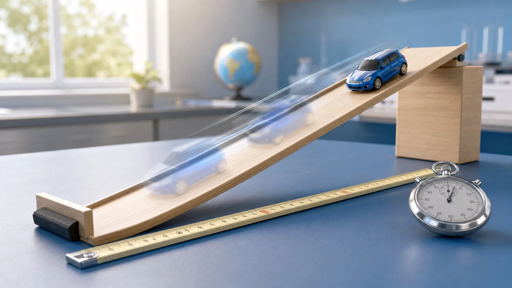

上册 · 第 1-6 章
观察、测量与光热现象
从机械运动开始建立测量意识，再走进声音、物态、光、透镜和密度。尚未开始检查
下册 · 第 7-12 章
力、压强与机械
从力的作用建立受力分析，再理解运动、压强、浮力、功和简单机械。尚未开始检查
下一步
上册：先补最值得补的一块
选择当前学习的分册，建议会优先回到该册最需要巩固的章节。

上册 · 第 1-6 章
从机械运动开始建立测量意识，再走进声音、物态、光、透镜和密度。尚未开始检查
下册 · 第 7-12 章
从力的作用建立受力分析，再理解运动、压强、浮力、功和简单机械。尚未开始检查
下一步
选择当前学习的分册，建议会优先回到该册最需要巩固的章节。